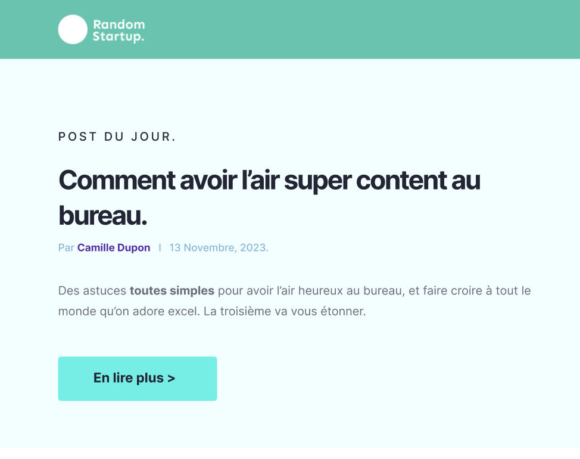

Random Startup
Durant ma formation, j'ai appris les bases du développement web front-end, en me familiarisant avec les langages HTML, CSS et JavaScript. J'ai également réalisé un projet où j'ai dû reproduire un front-end à partir d'une maquette Figma. Ce projet m'a permis de mettre en pratique mes connaissances en structuration de pages, en stylisation et en interactivité, tout en apprenant à transcrire une conception graphique en une interface web fonctionnelle et responsive. Cette expérience a renforcé ma compréhension des processus de développement front-end et de la mise en œuvre de maquettes dans des projets réels.